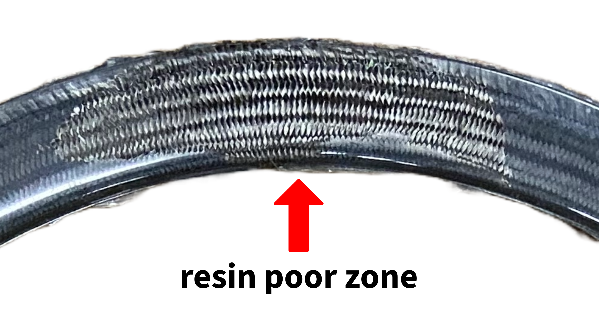

Carbon Fiber Rim Mold Optimization
Boyd Cycling & Time Bicycles Internship
Optimized RTM carbon-rim fabrication - mold geometry, injection parameters, and layup - to reduce resin distribution defects.

Overview
Process analysis and fixes for Resin Transfer Molding of high-performance carbon rims.
Challenge
Inconsistent resin distribution was creating resin-rich and resin-poor zones - structural and cosmetic risks in production rims.
Approach
Tracked resin flow and cure behavior, then adjusted mold temperature, injection pressure, and layup schedules to even out fill. Also hand-wrapped Non-Crimp Fabric on wax frame molds to prototype fiber orientations that automation couldn't yet reach.
Key Technologies
Manufacturing Work
Mold setup, winding, defect mapping, and NCF prototyping
Carbon preform in the mold before resin injection.
Automated winding of carbon fiber filaments.

Mapped excess resin accumulation.

Mapped insufficient resin penetration.
Hand-Wrapped NCF Prototypes
For complex frame geometries, applied Non-Crimp Fabric by hand on wax molds to control fiber orientation in high-stress zones before committing those schedules to production tooling.

NCF applied for prototype structural testing.